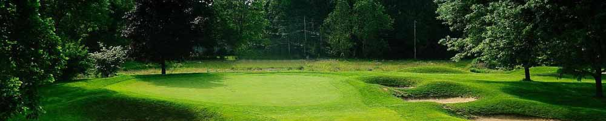

-
乔治高尔夫球俱乐部

乔治高尔夫球俱乐部 St. George Golf Club 久负盛名，建造于北美兴旺的20年代。球场靠近安大略湖岸边，1029年对外开放。球场全长7025码，标准杆是71杆，弯曲的球道和起伏的地形对于打球者都是一个重大的挑战。球场举办过四届加拿大公开赛，而LPGA精英赛也五次在这里举办，是加拿大排名第三的球场。
-
汉密尔顿高尔夫乡村俱乐
汉密尔顿高尔夫乡村俱乐部树木风貌，环境优美。球场共有三个九洞，分别叫南球场、西球场和东球场。锦标赛包括西球场（前九洞）和南球场（后九洞），于1916年对外开放，世界百大球场之一。
-
基奇纳西山高尔夫球俱乐部

西山高尔夫乡村俱乐部在1931年夏天对外开放，是加拿大首屈一指的高尔夫球场之一，在过去几年中其排名一直位居前15名。2014年位居加拿大SCOREGolf 百大高球场的第12名。
西山由著名的球场设计师，斯坦利•汤普森设计，场地由工作人员精心维护，冠军级的18洞高尔夫球场配有储备充足和经营专卖店，电动高尔夫球车，球童和友好，专业的工作人员。
-
伍德布里奇高尔夫乡村俱乐部

伍德布里奇 高尔夫乡村俱乐部成立于1924年，隐藏在圣华金河谷中，俱乐部的葡萄园和樱桃园中设有一个27洞的冠军级高尔夫球场，一个现代化的会所休闲和正式的餐厅，网球设施与7个网球场和一个全尺寸的游泳池。
-
温丹斯高尔夫俱乐部
温丹斯高尔夫俱乐部在安大略省阿克斯布里奇，由传奇人物格雷格-诺曼设计，拥有加拿大第一球场的特性。诺曼，世界高尔夫名人堂的成员，精心设计了一个巧妙的由通过和周围的前砂石坑来创建完成了一个令人惊叹的高尔夫球场杰作。所以，于2008年被评为高尔夫文摘评选的当年最佳球场亚军。
杰伦阿比幽谷高尔夫球场
杰伦阿比幽谷高尔夫球场位于安大略省奥克维尔。由杰克•尼克劳斯在1976年设计的，它是加拿大最著名的高尔夫球场之一，加拿大皇家高尔夫球协会和加拿大高尔夫名人堂的所在地。
阿比幽谷高尔夫俱乐部，欢迎公众高尔夫球手和ClubLink会员。开业超过30年以来一直受到一致好评，并且一直是高尔夫历史上的一个伟大阶段。包括世界著名的地产ClubLink、高尔夫-加拿大的总部、加拿大高尔夫博物馆和音乐厅的总部学院、以及泰勒梅性能实验室均在这里。
雷鸣之水
雷鸣之水是约翰 - 达利在加拿大的第一个高尔夫球场代表作。在加拿大课程。高尔夫球场拥有很高的风险回报风格，可以让不同级别的球员享受到刺激。
安格斯峡谷高尔夫俱乐部
安格斯峡谷高尔夫俱乐部提供美景、挑战、以及一流的服务。
安格斯峡谷高尔夫俱乐部是一个公共高尔夫球场，举办过享誉国际的高尔夫PGA巡回赛和锦标赛。每次选择在安格斯峡谷打球的时候，你都仿佛在于世界上最好的球手同场竞技。
南球场举办过2002年加拿大公开赛，当时约翰•罗林斯在激动的突然死亡淘汰赛中击败雷奥纳德和兰开斯特。连续第二年福瑞克角逐冠军在北球场上击败维杰 - 辛格赢得了2007年加拿大公开赛。有着这样两个不同的挑战等待着，安格斯峡谷将为所有人在这里打球的人创造一个值得你怀念的一天！